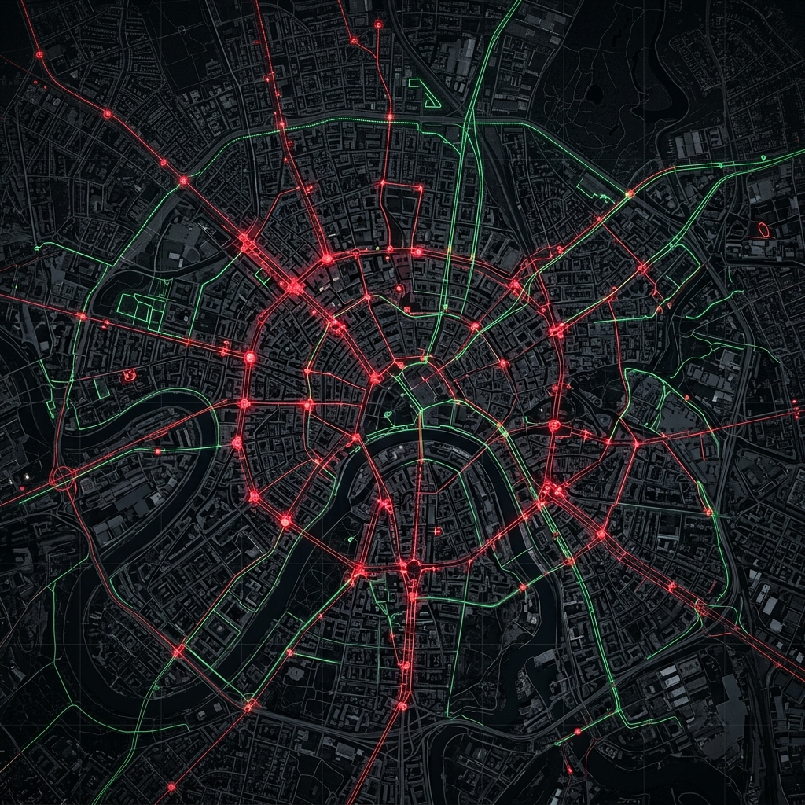

Job Atlas.
Spatial Engine.
Autonomous economic indicator ingestion, self-healing scraper orchestration, and time-decay emergence math across municipal & industrial geographies.

PREDICTIVE SPATIAL CONVERGENCE
Signal Atlas ingests unstructured public telemetry—university grants, municipal filings, and incubator dockets—via Bright Data proxies. The convergence engine calculates signal density to identify nascent tech hubs 30 days before market consensus. Currently tracking anomalies in the Pune geographic matrix (18.5204° N, 73.8567° E).
UNSTRUCTURED
TELEMETRY
INTELLIGENCE
Raw economic feeds are transformed into spatial convergence density, capturing where capital, talent, and civil infrastructure intersect before public indices react.
Continuous monitoring of early-stage opportunities—from university technology transfer announcements to municipal council zoning filings—bypassing delayed aggregate reporting.